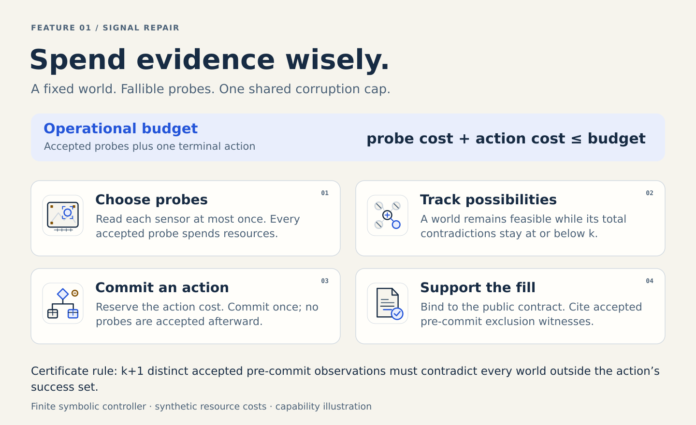

Evidence can change which action is justified.
One world is fixed, and at most k distinct probes may return a flipped answer. A world remains possible while the total disagreement with accepted observations is at most k. That allowance never resets between observations.
The agent can stop when it has enough evidence for an action that succeeds in every remaining world. A common successful bypass can need no sensing.
The final fill carries an obligation.
For every world outside the committed action’s success set, the fill cites at least k+1 distinct accepted pre-commit probe observations that contradict that world. The statement digest binds the fill to the public contract.
Tool cost is a synthetic resource convention. The finite controller does not establish physical-sensor reliability or real-world robotics transfer.
Read the complete Signal Repair contract ↗